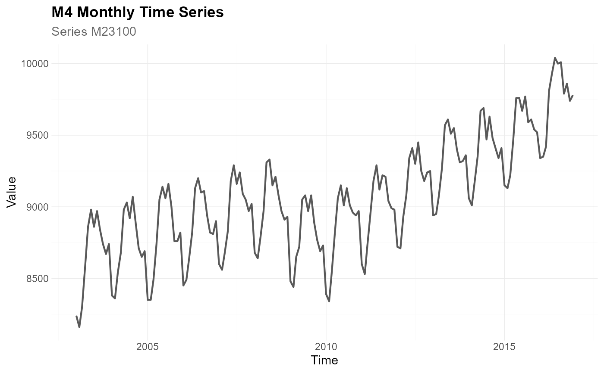
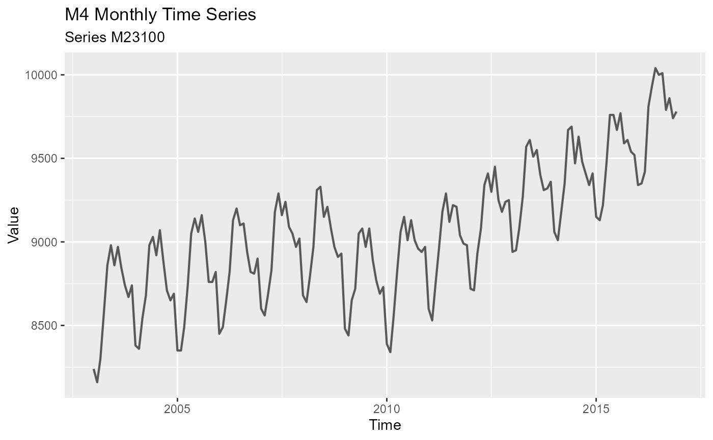
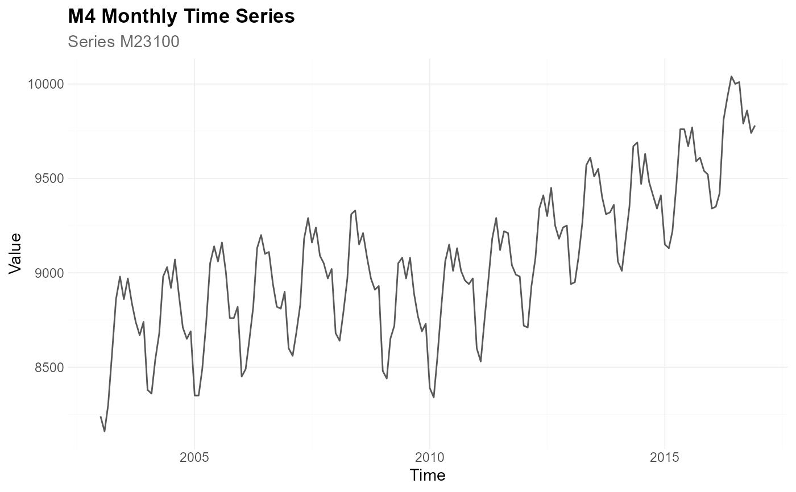

Create the default ggplot2 theme used by the tscv package.
Usage
theme_tscv(
base_size = 11,
base_family = "",
base_line_size = base_size/22,
base_rect_size = base_size/22
)Details
theme_tscv() returns a complete ggplot2 theme with a clean
layout, subtle grid lines, bottom legend placement, and formatting for plot
titles, subtitles, captions, facets, and axes.
The theme is used as the default theme in the plotting helpers of the
tscv package, such as plot_line(), plot_point(),
plot_bar(), plot_histogram(), plot_density(), and
plot_qq().
Since the returned object is a regular ggplot2 theme, it can also be
added directly to any ggplot object with + theme_tscv().
See also
Other data visualization:
plot_bar(),
plot_density(),
plot_histogram(),
plot_line(),
plot_point(),
plot_qq(),
scale_color_tscv(),
scale_fill_tscv(),
tscv_cols(),
tscv_pal()
Examples
library(dplyr)
library(ggplot2)
data <- M4_monthly_data |>
filter(series == "M23100") |>
mutate(index = as.Date(index))
# Plot with the default tscv theme
plot_line(
data = data,
x = index,
y = value,
title = "M4 Monthly Time Series",
subtitle = "Series M23100",
xlab = "Time",
ylab = "Value",
theme_set = theme_tscv()
)

# The same plot with the default ggplot2 grey theme
plot_line(
data = data,
x = index,
y = value,
title = "M4 Monthly Time Series",
subtitle = "Series M23100",
xlab = "Time",
ylab = "Value",
theme_set = theme_grey()
)

# theme_tscv() can also be added to regular ggplot objects
ggplot(data, aes(x = index, y = value)) +
geom_line(color = "grey35") +
labs(
title = "M4 Monthly Time Series",
subtitle = "Series M23100",
x = "Time",
y = "Value"
) +
theme_tscv()
